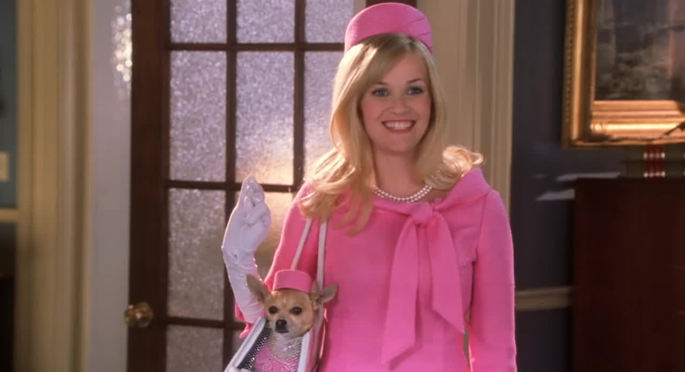

Reese Witherspoon returns as the wonderful Elle Woods, now a full-time lawyer and engaged to her boyfriend from the first movie. And for some reason, he wants a baseball-themed wedding. Whatever that means.
However, that's not the issue; the problem is that Elle wants to invite her dog and the dog's mother. So, she asks a local detective to search for the dog's mother. The detective's name is not mentioned, but he seems to be quite competent. He was able to find the dog's mother in the fastest investigation I've ever seen in a movie.
Apparently, the dog's mother is being tested on. This pisses Elle off, so she decides to take action and fight against animal testing in Washington, D.C. Oh, and she also gets fired from her current job. Because reasons.
What does Elle do? She goes to Washington D.C. to have a law passed to ban animal testing. Which is the plot for the entire movie. Yeah, I'm just as confused as you.
There's so much in this that makes no sense. I get the feeling the writers just wrote down one-word ideas, put them in a top hat, and pulled out a movie. If you can even consider this a movie at all.
Speaking of things that make no sense, why does the movie have a five-minute subplot about the dog being gay? Was it even necessary? Was it supposed to mean anything? Was it supposed to help move the plot along? We may never know, but I do know one thing, though: Nobody cares about the damn dog being gay.
With any movie sequel, there are new characters, but to tell you the truth, I honestly cannot remember a single thing about them. They literally felt like cardboard cutouts with working mouth mechanisms to read lines from a piece of paper.
The only character who actually got development was the god damn doorman. Yes, the doorman. Not any of the colleagues. Did the writers spend all their brain power on that one character while the others were put to the side? Don't get me wrong, the doorman is a nice guy who actually listens and gives advice to Elle, but you would think the colleagues, who "work" with Elle, would have some sort of development. Actually, what does the word "development" mean anymore? This movie lacked any sort of development that I actually forgot what it means.
This movie is just a mess. The plot is all over the place, the characters are uninteresting, and the humor is forced and unfunny. It's like they took everything that made the first movie enjoyable and threw it out the window. A large window at that. I wonder which one it was.